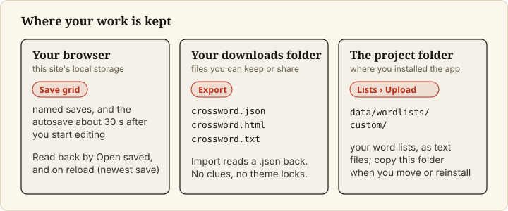
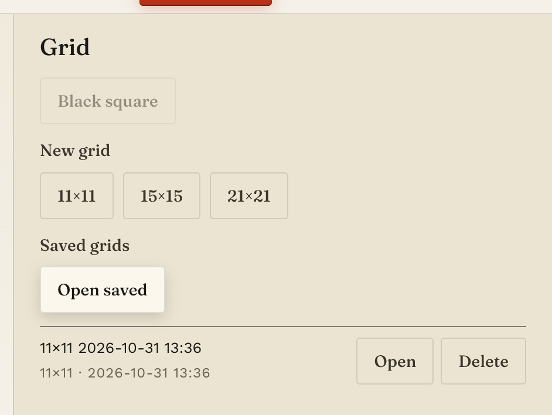
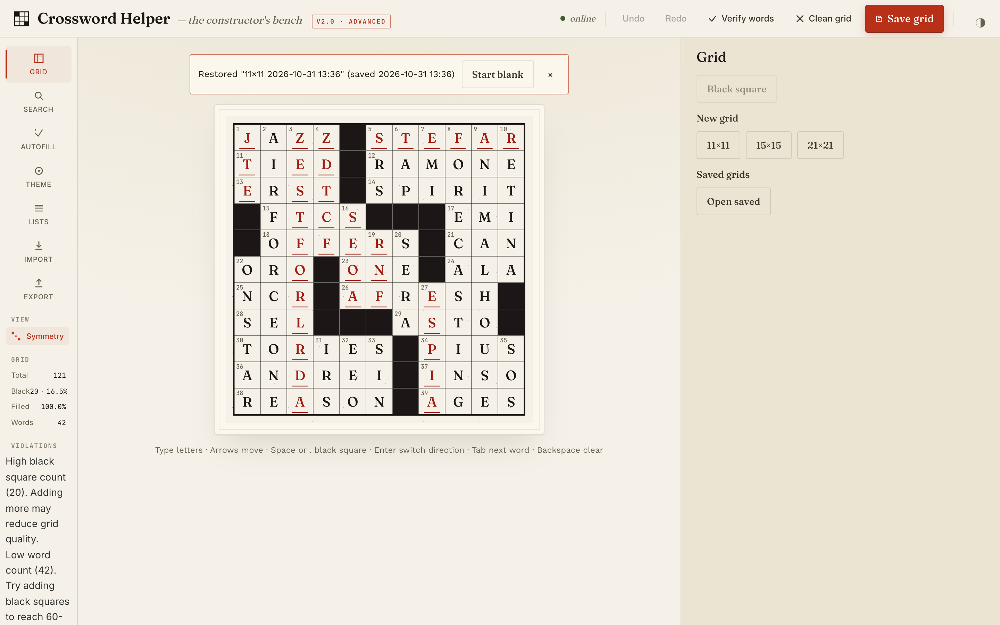

Save, reopen and recover your work
Goal
Keep a grid so you can come back to it, get it back after closing or reloading the tab, and step back from a mistake. These steps apply to the web app.


Prerequisites
- The app is running and you have a grid open (Set up the grid).
Steps
1. Save the grid under a name
Click Save grid in the top bar. A prompt titled Name this grid appears with a suggested name (for example
11×11 2026-10-29 13:53). Edit the name if you like and click Save (or press Cancel, or Escape, to
close the prompt without saving).

If another saved grid already has that name, the app asks Replace the saved grid named "<name>"?. Click
Replace to overwrite it, or Cancel and choose a different name.
After a save, the label beside the button reads saved locally · just now, then ages (for example
saved locally · 1m ago).
The app also saves your grid by itself, about 30 seconds after you start editing (the delay is AUTOSAVE_MS
in src/hooks/useSaveMachine.js). While changes are waiting the label reads unsaved changes, then saving…,
then saved locally · just now; if a save fails it reads offline — will retry. A named save is how you keep
a version you want to find again.
Saved grids are stored in your browser's local storage. They are not files in the project folder. unverified Browser storage is per browser, so they should not appear in another browser or on another computer, and clearing the site's data removes them; this is general browser behaviour and was not tested here. To keep a copy outside the browser, export the grid.
2. Reopen a saved grid
In the Grid tool, under Saved grids, click Open saved. Each saved grid is listed with its size and
save time, and Open and Delete buttons. Click Open on the one you want. If the current grid has
content, the app asks Replace the current grid? Unsaved changes are lost. first.


3. Delete a saved grid
In the same list, click Delete. The app asks Delete "<name>"?; click Delete to confirm.
4. Recover after a reload
When you reload the page, the app reopens your most recent save and shows a banner: Restored "<name>" (saved
<time>), with Start blank and a dismiss ×. Start blank only dismisses the banner and opens the Grid tool;
it does not clear the grid. To get an empty grid, click 11×11, 15×15 or 21×21 under New grid and confirm
with Replace.


Only the newest save is restored automatically. Older saves are still in Open saved.
5. Step back from a mistake
Click Undo in the top bar, or press Cmd+Z (Ctrl+Z on Linux); Redo is Cmd+Shift+Z. unverified The README
describes undo as one step per letter, with a placed word, Apply All Best Placements, a clean or a finished
autofill each undoing as one step, and as not reaching back across starting a new grid, importing or opening a
saved grid; this was not re-tested for this page.
Final Result
The label by Save grid reads saved locally · just now, and the grid appears under Open saved.
Known problems
If the browser's storage is full, a save fails with Could not save: browser storage is full. Delete a saved
grid or export this one. Other save and restore edge cases are listed under "Known Limitations" in the
README.
Next Steps
- Export a copy you can print or re-import: Import and export grids.
- All controls: Web app reference.